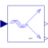

ToSpacePhasorConversion of polyphase instantaneous values to space phasors |

|
Information
This information is part of the Modelica Standard Library maintained by the Modelica Association.
Transformation of polyphase values (of voltages or currents) to space phasor and zero sequence value.Parameters (3)
| nin |
Value: m Type: Integer Description: Number of inputs |
|---|---|
| nout |
Value: 2 Type: Integer Description: Number of outputs |
| m |
Value: 3 Type: Integer Description: Number of phases |
Connectors (3)
| u |
Type: RealInput[nin] Description: Connector of Real input signals |
|
|---|---|---|
| y |
Type: RealOutput[nout] Description: Connector of Real output signals |
|
| zero |
Type: RealOutput Description: Zero sequence component |
Used in Examples (3)
|
Modelica.Electrical.Machines.Examples.InductionMachines Test example: InductionMachineSquirrelCage inverter drive |
|
|
Modelica.Electrical.Machines.Examples.SynchronousMachines SMPM at no-load |
|
|
Modelica.Electrical.PowerConverters.Examples.DCAC.PolyphaseTwoLevel Test of pulse width modulation methods |
Used in Components (4)
|
Modelica.Electrical.Machines.Sensors Length of space phasor -> RMS voltage |
|
|
Modelica.Electrical.Machines.Sensors Length of space phasor -> RMS current |
|
|
Modelica.Electrical.Machines.Sensors Rotor lagging angle |
|
|
Modelica.Electrical.Machines.Utilities Transform instantaneous stator inputs to rotor fixed space phasor |